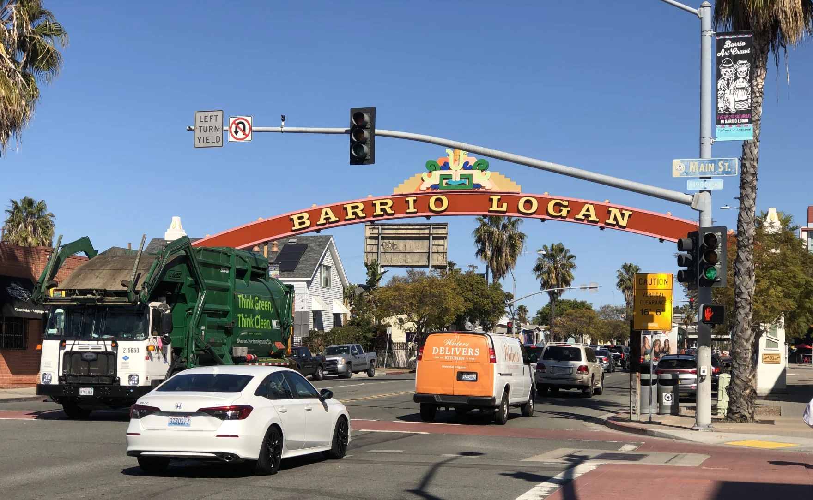
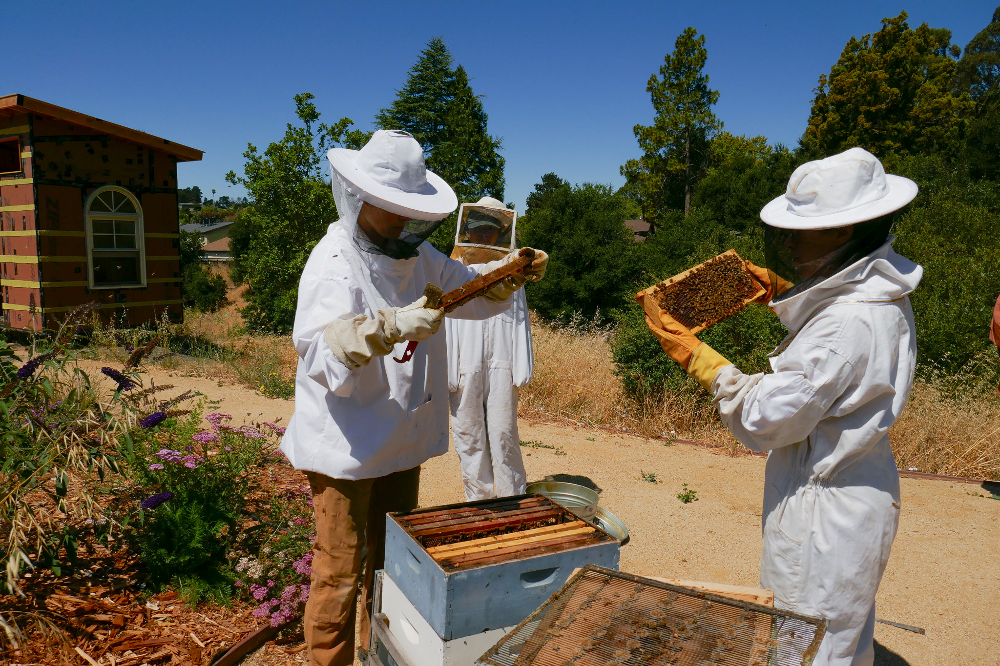
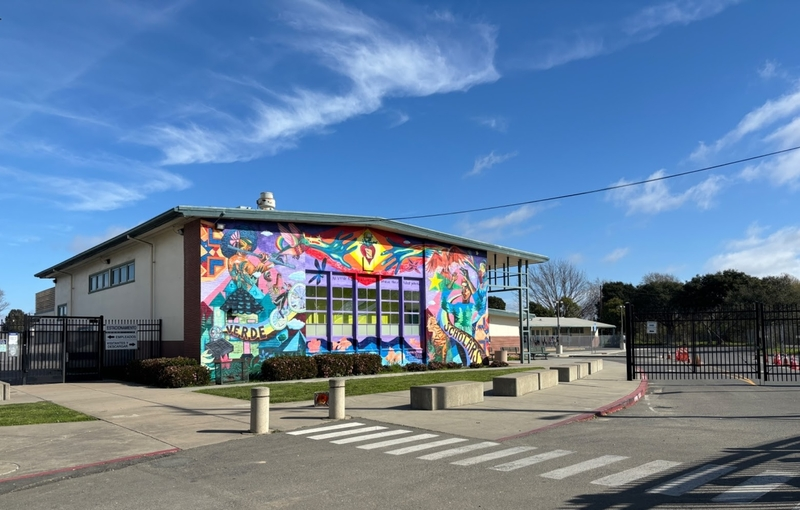
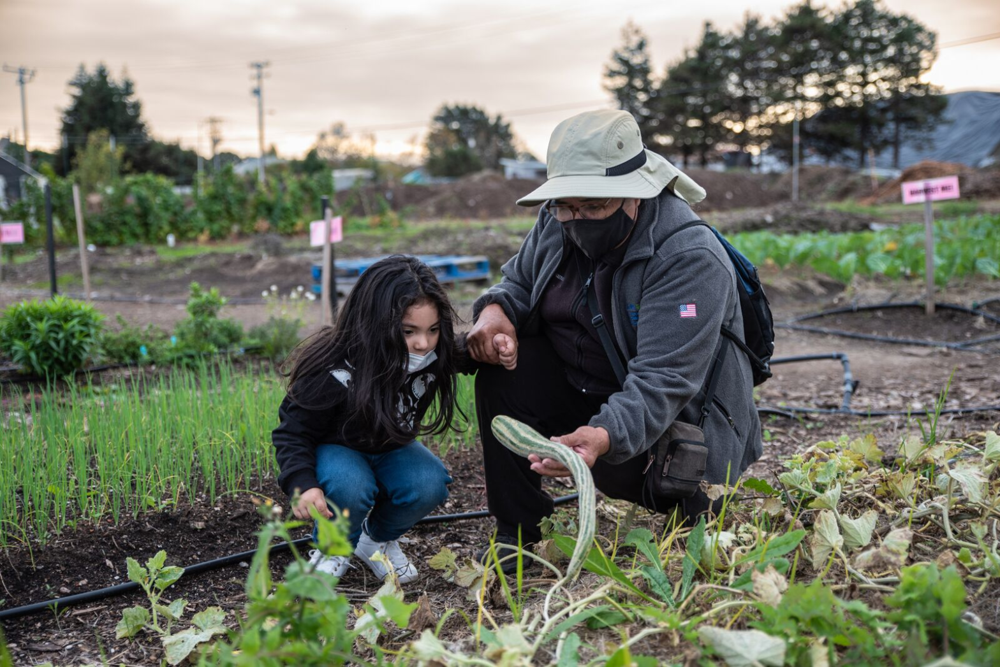
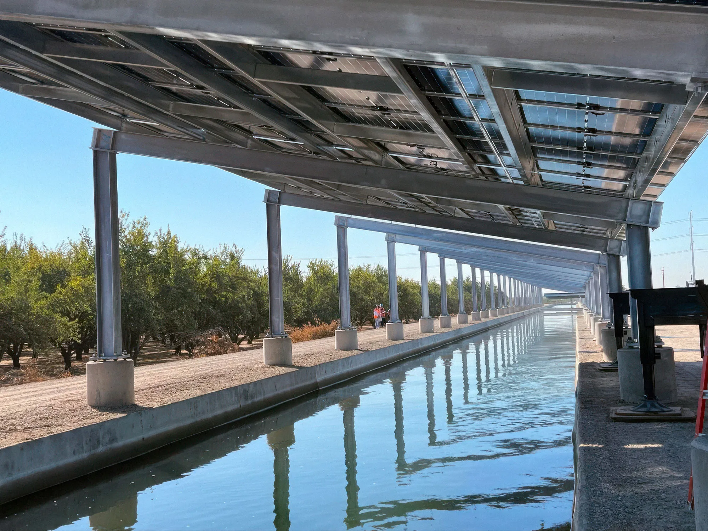
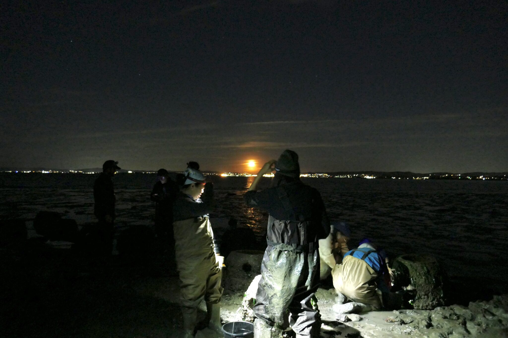
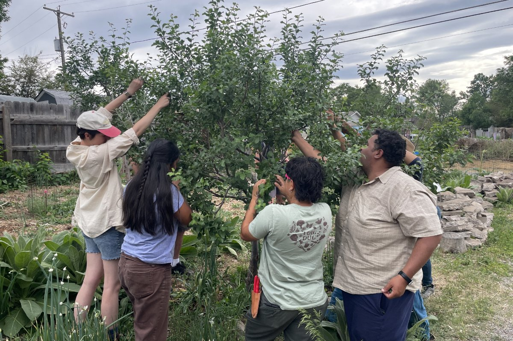
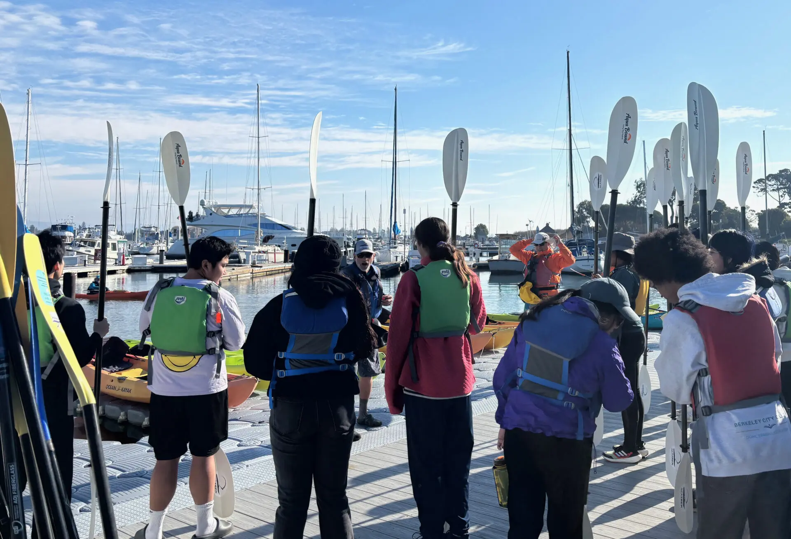

Published Work

Two San Diego nonprofits are poised to lose promised environmental justice grants — but the EPA has yet to tell them
After months of being unable to withdraw millions in contractually obligated funds with no explanation, Casa Familiar and the Environmetal Health Coalition are forced to restructure their operations upon learning that their grants are set to be terminated.
Read story
A groundbreaking California farming collective navigates the loss of federal grants
Due to grant cuts by the USDA, Agroecology Commons will offer less support to fewer aspiring farmers from underserved communities.
Read story
County cautious about $19M federal grant after Trump executive order
Grant’s “suspended” status and unclear funding details left North Richmond environmental justice projects seemingly in limbo.
Read story
EPA suspends North Richmond grant again, putting $19M in projects in limbo
County says it got $30,000, but now can’t access additional funds. EPA says Monday it’s proud of axing grants to save money.
Read story
Solar canal pilot may one day help California achieve its ambitious climate, energy goals
In late March, the first-ever solar canal — known as Project Nexus — was connected to the grid in Turlock. The $20 million state-funded project, which began in 2022, has the capacity to produce over a megawatt of electricity.
Read story
Keeping track of Olympia oysters, once abundant and now in decline on Richmond’s shoreline
Oyster restoration along the Richmond shoreline has picked up in the past decade, not only to boost the Bay Area’s declining oyster populations, but also to help protect the coastline.
Read story
Denver’s Food Forests Provide Free Fruit While Greening the Environment
Despite federal roadblocks, an ambitious agroforestry program is feeding people, cleaning the air, and helping offset climate change
Read story
Oakland High Schoolers Sample Local Kayaking
An Oakland outdoor school program is helping students connect with nature and learn about the local environment.
Read story